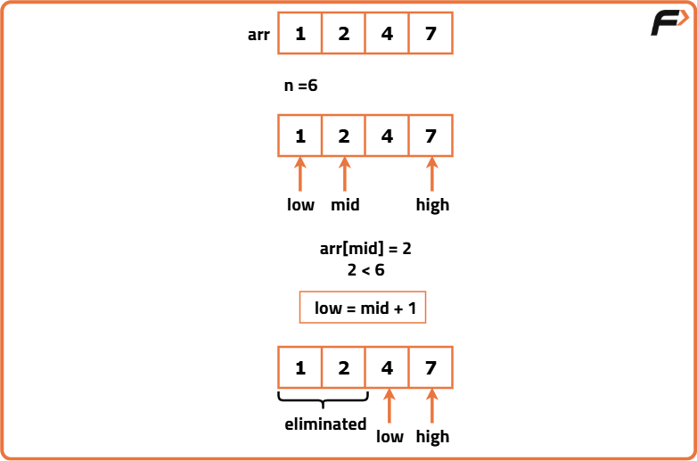
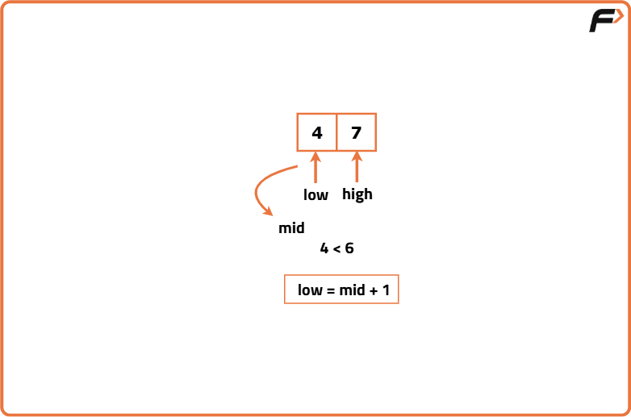
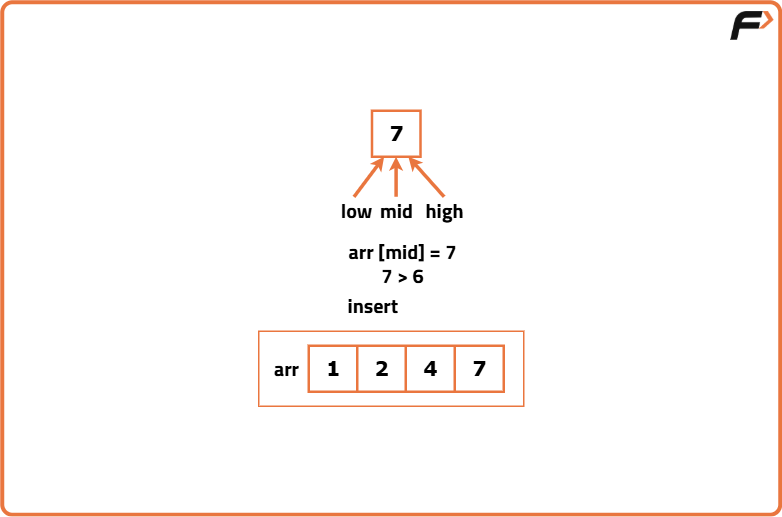

Search Insert Position
Problem Statement: You are given a sorted array arr of distinct values and a target value x. You need to search for the index of the target value in the array.
Examples
Example 1:
Input Format: arr[] = {1,2,4,7}, x = 6
Result: 3
Explanation: 6 is not present in the array. So, if we will insert 6 in the 3rd index(0-based indexing), the array will still be sorted. {1,2,4,6,7}.
Example 2:
Input Format: arr[] = {1,2,4,7}, x = 2
Result: 1
Explanation: 2 is present in the array and so we will return its index i.e. 1.
Disclaimer: Here is the practice link to help you assess your knowledge better. It's highly recommend trying to solve it before looking at the solution.
Approach
Algorithm
We will declare the 2 pointers and an ‘ans’ variable initialized to n i.e. the size of the array(as If we don’t find any index, we will return n).
- Place the 2 pointers i.e. low and high: Initially, we will place the pointers like this: low will point to the first index and high will point to the last index.
- Calculate the ‘mid’: Now, we will calculate the value of mid using the following formula: mid = (low+high) // 2 ( ‘//’ refers to integer division.
- Compare arr[mid] with x: With comparing arr[mid] to x, we can observe 2 different cases:
- Case 1 - If arr[mid] >= x: This condition means that the index mid may be an answer. So, we will update the ‘ans’ variable with mid and search in the left half if there is any smaller index that satisfies the same condition. Here, we are eliminating the right half.
- Case 2 - If arr[mid] < x: In this case, mid cannot be our answer and we need to find some bigger element. So, we will eliminate the left half and search in the right half for the answer.
- The above process will continue until the pointer low crosses high.



Code
import java.util.*;
public class BinarySearchInsert {
// Function to find the insert position of x in sorted array
public int searchInsert(int[] arr, int x) {
int n = arr.length;
int low = 0, high = n - 1;
int ans = n; // Default to end if x is greater than all elements
while (low <= high) {
int mid = (low + high) / 2;
if (arr[mid] >= x) {
// Potential answer found, try to go left
ans = mid;
high = mid - 1;
} else {
// Go right
low = mid + 1;
}
}
return ans;
}
public static void main(String[] args) {
int[] arr = {1, 2, 4, 7};
int x = 6;
BinarySearchInsert obj = new BinarySearchInsert();
int index = obj.searchInsert(arr, x);
System.out.println("The index is: " + index);
}
}
Complexity Analysis
Time Complexity: O(logN), where N = size of the given array.
Space Complexity: O(1) as we are using no extra space.